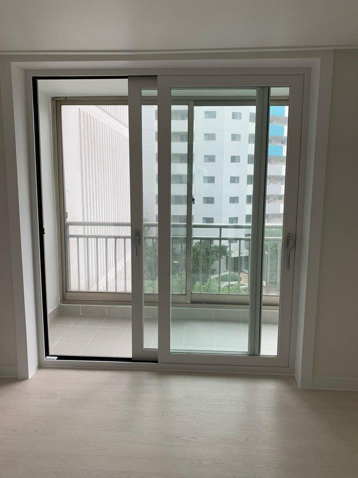

신청부터 새 창까지,
이렇게 진행돼요
누가 오고, 무엇을 하는지 미리 알려드릴게요.
모르는 채로 기다리는 일이 없게요.
-
1단계
실측 신청
온라인이나 전화로 신청해 주세요. 담당자가 전화드려서 방문 날짜를 잡아요.
-
2단계
방문 실측 · 상담
창마다 크기를 재고 틀 상태를 봐요. 샘플을 보면서 창 종류와 유리를 같이 골라요.
-
3단계
항목별 견적서
창마다 가격을 나눠 적은 견적서를 문자로 보내드려요. 두세 가지 사양으로 비교해 드리기도 해요.
추가 비용 없는 확정 금액 -
4단계
계약 · 공사 날짜 정하기
계약하시면 공사 날을 잡고, 관리사무소 신고와 엘리베이터 예약을 저희가 해요.
이사 · 인테리어 일정에 맞춰요 -
5단계
공장에서 제작
실측한 치수대로 화성 정남 공장에서 직접 창을 만들어요. 공사 전에 다시 연락드려서 날짜를 확인해요.
우리 집 치수로 맞춤 제작 -
6단계
철거 · 설치 · 마감
기존 샷시를 철거하고 새 창을 달아요. 폐기물을 가져가고 청소까지 하고 나와요.
철거부터 청소까지 한 번에 -
공사 뒤
시공 내역서 · A/S
공사 뒤 창마다 제품과 유리 사양을 적은 시공 내역서를 드려요. 쓰다가 불편한 게 생기면 언제든 연락 주세요. 시공한 팀이 다시 가요.
시공한 팀이 직접 A/S

안양 우성목련아파트 · 공사 마친 날살면서 하는 공사
집이 어질러지지
않게 해요
대부분 살면서 공사하세요.
그래서 보양과 청소를 꼼꼼히 해요.
- 창 주변 바닥과 가구는 비닐로 덮어요
- 창을 하나씩 떼고 바로 끼워서 집이 오래 열려 있지 않아요
- 끝나면 실내용 청소기로 먼지를 치워요